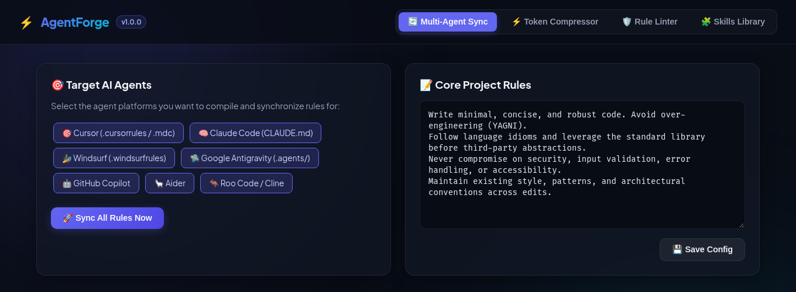

Write the rules once.
Forge them for every agent.قوانین را یک بار بنویسید.
برای همهٔ ایجنتها بسازید.
AgentForge turns one .agentforge.yaml into native rule files for Cursor, Claude Code, Windsurf, Antigravity, Copilot, Aider and Cline, packs your code into token-light AST skeletons, lints your rules for leaked keys and dangerous directives, and ships 7 built-in skills.ایجنتفورج یک فایل .agentforge.yaml را به فایلهای قانون بومیِ Cursor، Claude Code، Windsurf، Antigravity، Copilot، Aider و Cline تبدیل میکند، کدتان را به اسکلتهای AST کمتوکن فشرده میکند، قوانین را برای کلیدهای لورفته و دستورهای خطرناک بررسی میکند و ۷ مهارت آماده دارد.
$ npx github:mrzroot/agentforge initNot on npm yet: it runs straight from GitHub and builds on install.هنوز در npm منتشر نشده؛ مستقیم از گیتهاب اجرا و هنگام نصب ساخته میشود.
name: shop-api stack: languages: [TypeScript] frameworks: [Express] testRunner: npm test rules: core: - Write minimal, robust code (YAGNI). security: - Never hardcode API keys. skills: - name: tdd-architect - name: security-auditor
- CuCursor.cursorrules · .mdc
- ClClaude CodeCLAUDE.md
- WsWindsurf.windsurfrules
- AgAntigravity.agents/AGENTS.md
- CoCopilotcopilot-instructions.md
- AiAider.aider.conf.yml · .md
- CnCline / Roo.clinerules
$
Seven agents. Seven rule files.
Seven ways to drift.هفت ایجنت، هفت فایل قانون،
هفت راه برای ناهماهنگی.
Every assistant reads its own file. Fix a rule in one and the others quietly keep the old version, while raw source files burn your context window on every prompt.هر دستیار فایل خودش را میخواند. قانونی را در یکی اصلاح کنید و بقیه بیصدا نسخهٔ قدیمی را نگه میدارند؛ در همین حال فایلهای خام کد در هر پرامپت پنجرهٔ کانتکست را میسوزانند.
One source of truth. agentforge sync regenerates every target; files that didn't change are left alone.یک منبع حقیقت. agentforge sync همهٔ مقصدها را بازتولید میکند و به فایلهایی که تغییری نکردهاند دست نمیزند.
Hammer code into skeletons.کد را به اسکلت تبدیل کنید.
The Token-Killer keeps what an agent needs to reason about your code (exports, signatures, types, docstrings) and strips routine bodies. The result is one Markdown context bundle.«توکنکُش» چیزهایی را که ایجنت برای فهم کد لازم دارد (خروجیها، امضاها، تایپها و توضیحات) نگه میدارد و بدنهٔ توابع را حذف میکند. خروجی یک بستهٔ کانتکست مارکداون است.
export interface Item { id: string; price: number; qty: number } /** Sum the cart total in rials */ export function total(items: Item[]): number { let t = 0; for (const i of items) { t += i.price * i.qty; } return Math.round(t); } export class Cart { private items: Item[] = []; add(item: Item): void { this.items.push(item); console.log('added', item.id); } clear(): void { this.items = []; } }
export interface Item { id: string; price: number; qty: number } /** Sum the cart total in rials */ export function total(items: Item[]): number { /* ... */ } export class Cart { /* ... */ }
This tiny file has little body to strip, so it saves ~51%. On the larger codebase in the README benchmark: 48,200 → 6,150 tokens (87.2% less). Token counts are a fast local estimate, not a model tokenizer.این فایل کوچک بدنهٔ زیادی ندارد و حدود ۵۱٪ صرفهجویی میکند. در بنچمارک README روی یک کدبیس بزرگتر: ۴۸٬۲۰۰ ← ۶٬۱۵۰ توکن (۸۷٫۲٪ کمتر). شمارش توکن یک تخمین سریع محلی است، نه توکنایزر واقعی مدل.
Temper your rules before agents read them.قوانین را قبل از خواندن ایجنت آبدیده کنید.
An Agent Health Score from 0 to 100% for security, clarity and token efficiency, with every finding ranked by severity.«امتیاز سلامت ایجنت» از ۰ تا ۱۰۰٪ برای امنیت، وضوح و بهرهوری توکن؛ هر یافته بر اساس شدت رتبهبندی میشود.
CRITICAL
- OpenAI, Anthropic and Gemini API keysکلیدهای API اوپناِیآی، آنتروپیک و جمنای
- GitHub tokens, AWS keys, private keys, hard-coded passwordsتوکن گیتهاب، کلید AWS، کلید خصوصی و رمزهای هاردکد
- Destructive directives:
rm -rf /,DROP TABLE, “disable auth / ignore SSL”دستورهای مخرب:rm -rf /،DROP TABLEو «غیرفعال کردن احراز هویت / نادیده گرفتن SSL» - Contradicting rulesقوانین متناقض
WARNING
- Bloated rules (over ~80 tokens each)قوانین حجیم (بیش از حدود ۸۰ توکن)
- A total rules prompt so large it eats context on every turnمجموع قوانینی آنقدر بزرگ که در هر نوبت کانتکست را میخورد
INFO
- Vague phrasing like “make it clean” or “best practices”, with concrete rewrites suggestedعبارتهای مبهم مثل «تمیزش کن» یا «بهترین روشها» همراه با پیشنهاد جایگزین مشخص
7 skills, ready to temper in.۷ مهارت آماده برای افزودن.
Battle-tested personas that drop straight into every agent's instructions. Click a card to copy its install command.پرسوناهای آزموده که مستقیم به دستورالعمل همهٔ ایجنتها اضافه میشوند. روی هر کارت بزنید تا فرمان نصبش کپی شود.
Skills live in a small registry in the source. Add one and open a PR.مهارتها در یک رجیستری کوچک در سورس هستند. مهارت خودتان را اضافه کنید و PR بفرستید.
Where the sparks land.جرقهها کجا فرود میآیند.
Pick targets in the YAML or per run with --targets. --dry-run shows what would change without writing.مقصدها را در YAML یا در هر اجرا با --targets انتخاب کنید. --dry-run بدون نوشتن نشان میدهد چه چیزی تغییر میکند.
| Agentایجنت | Files writtenفایلهای تولیدی | --targets |
|---|---|---|
| Cursor | .cursorrules · .cursor/rules/project-rules.mdc | cursor |
| Claude Code | CLAUDE.md | claude |
| Windsurf | .windsurfrules | windsurf |
| Google Antigravity | .agents/AGENTS.md | antigravity |
| GitHub Copilot | .github/copilot-instructions.md | copilot |
| Aider | .aider.conf.yml · .aider.prompt.md | aider |
| Cline / Roo Code | .clinerules | cline |
A local Web Studio.یک استودیوی وب محلی.
Prefer clicking? agentforge ui opens a dashboard on localhost:3737.کلیک را ترجیح میدهید؟ agentforge ui داشبوردی روی localhost:3737 باز میکند.
- Rule editor with one-click target toggles and syncویرایشگر قوانین با انتخاب مقصد و همگامسازی با یک کلیک
- Live compression playground with token countsزمین بازی فشردهسازی زنده با شمارش توکن
- Health score widget with fix suggestionsویجت امتیاز سلامت با پیشنهاد اصلاح
- Visual skills browserمرورگر تصویری مهارتها

Light the forge in 30 seconds.در ۳۰ ثانیه کوره را روشن کنید.
# in your project (Node 18+, npm 10+ recommended) npx github:mrzroot/agentforge init # detects your stack npx github:mrzroot/agentforge sync # write every agent's rules npx github:mrzroot/agentforge pack --out CONTEXT.md npx github:mrzroot/agentforge lint npx github:mrzroot/agentforge ui # http://localhost:3737
git clone https://github.com/mrzroot/agentforge.git cd agentforge npm install # builds via the prepare script npm link # puts `agentforge` and `af` on your PATH cd ~/your-project agentforge init -y agentforge sync --targets cursor claude aider
npx agentforge won't work. Use the github: form or a source checkout.توجه: ایجنتفورج هنوز در npm منتشر نشده، پس npx agentforge کار نمیکند. از شکل github: یا نسخهٔ سورس استفاده کنید.init [-y]Create .agentforge.yaml from your detected stackساخت .agentforge.yaml بر اساس پشتهٔ شناساییشدهsync [-t …] [--dry-run]Compile rules for every target agentکامپایل قوانین برای همهٔ ایجنتهای مقصدpack [-o PROJECT_CONTEXT.md]Write a token-light AST context bundleنوشتن بستهٔ کانتکست AST کمتوکنlintScore rules for security, clarity and bloatامتیازدهی قوانین از نظر امنیت، وضوح و حجمskills list · skills add <id>Browse and install built-in skillsمرور و نصب مهارتهای آمادهui [-p 3737]Launch the local Web Studioاجرای استودیوی وب محلیQuestions from the anvil.پرسشها از کنار سندان.
Is it on npm?در npm هست؟
Not yet. Run it with npx github:mrzroot/agentforge <command>, which installs from the repo and builds automatically, or clone it and npm link.هنوز نه. با npx github:mrzroot/agentforge <command> اجرایش کنید که از مخزن نصب و خودکار ساخته میشود، یا مخزن را کلون و npm link کنید.
Does my code leave my machine?کد من از سیستمم خارج میشود؟
No. Sync, pack and lint are plain local file operations, and the Web Studio is served from your own machine. AgentForge has no telemetry and makes no API calls.نه. sync، pack و lint عملیات ساده روی فایلهای محلیاند و استودیوی وب هم از خود سیستم شما سرو میشود. ایجنتفورج تلهمتری ندارد و هیچ API ای را صدا نمیزند.
Will sync overwrite my hand-written CLAUDE.md?sync فایل CLAUDE.mdِ دستنویس من را بازنویسی میکند؟
Yes, generated files are owned by AgentForge: changed ones are reported as updated, identical ones as unchanged. Move your existing guidance into .agentforge.yaml first, commit, and use --dry-run to preview.بله، فایلهای تولیدی متعلق به ایجنتفورجاند: فایلهای تغییرکرده updated و فایلهای یکسان unchanged گزارش میشوند. اول راهنماییهای فعلی را به .agentforge.yaml منتقل و کامیت کنید و با --dry-run پیشنمایش بگیرید.
How accurate are the token numbers?اعداد توکن چقدر دقیقاند؟
They come from a fast BPE-style heuristic, close enough to compare before and after, but not your model's exact tokenizer. Savings depend on how much of your code is function bodies.از یک تخمین سریع شبیه BPE میآیند؛ برای مقایسهٔ قبل و بعد کافیاند، اما توکنایزر دقیق مدل شما نیستند. میزان صرفهجویی به سهم بدنهٔ توابع در کدتان بستگی دارد.
Which languages can pack skeletonize?pack کدام زبانها را اسکلت میکند؟
TypeScript and JavaScript (including JSX/TSX), Python, Go, Rust and PHP. JSON is condensed; other files are included as text. Include and exclude globs and a per-file token cap live under compression: in the YAML.TypeScript و JavaScript (با JSX/TSX)، Python، Go، Rust و PHP. JSON فشرده میشود و بقیهٔ فایلها متنی میآیند. الگوهای include/exclude و سقف توکن هر فایل زیر compression: در YAML تنظیم میشوند.
Can I add my own agent target or skill?میتوانم ایجنت یا مهارت خودم را اضافه کنم؟
Yes. Targets are small generators in src/core/sync and skills sit in src/core/skills/registry.ts. PRs are welcome.بله. مقصدها مولدهای کوچکی در src/core/sync هستند و مهارتها در src/core/skills/registry.ts. PR شما خوشآمد است.